Demilight
The Demilight project began in 2019 with the goal of creating a 3D printable, miniature moving light controlled by an Arduino-compatible microcontroller. This page catalogs the current state of the project, along with project history and assembly instructions.
Currently, the project is on Version 0.9.4.
There are still enough rough-edges that the project that I haven't published the STLs for the 3D-printed parts, nor the gerbers/BOM for the controller. I don't intend to try to reach perfection before releasing everything, I just want to get rid of some of the more egregious 'gotchas' so someone who's not me stands a good chance of building one successfully.
In reverse chronological order, the version history is as follows:
Videos and Livestreams
Click the thumbnail below to view the entire playlist of 28 Demilight-related videos.
Blog Posts
- Demilight Version 0.8.1
- Demilight Version 0.8
- Arduino DMX 'Light Board', Mini Moving Light Hanging Hardware
- DMX Mini Moving Light First Assembly & Live Stream
- DMX Mini Mover Shield PCB Assembly Stream
- DMX Mini Moving Light Shield V0.3
- Arduino Pro Mini DMX Shield
Version History
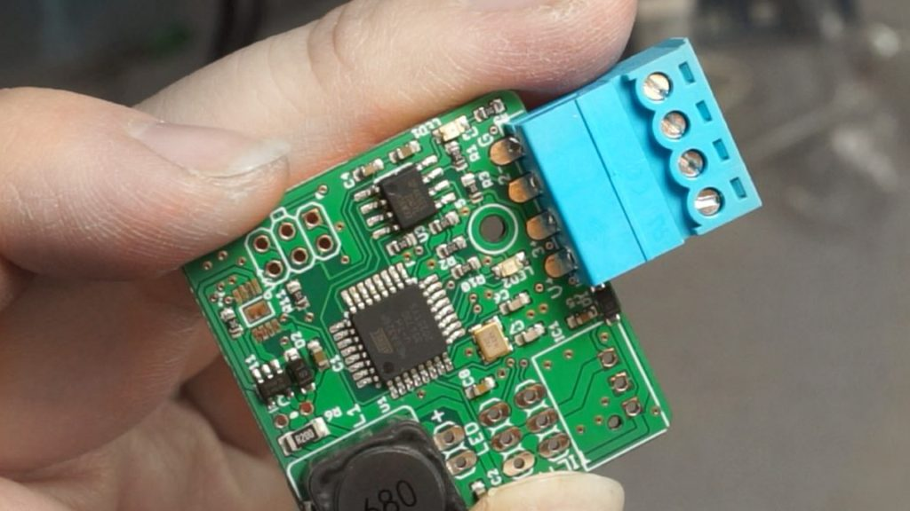
Version 0.9.3 corrected the BOM issues with version 0.9.1 and, on the advice of some fellow nerds during a livestream in November 2020, changing the 0.1" header connectors on the power/data input to a Phoenix connector. These pluggable terminal blocks proved to have much better mechanical characteristics than the 0.1" headers, and will likely be the primary connection method going forward. A new version of the DMX/Power injector board was also created using phoenix connectors. (All are 0.15" pitch, which seems to be the smallest commonly-available pitch.)
Unfortunately, version 0.9.3 had a critical flaw in one of its other minor improvements. In the same livestream, it was discovered that the maximum safe operating power for the LEDs was about 5W before their solder started to melt. To match this, and with a forward voltage of roughly 10.7V on the LED chips in use, the 0.9.3 PCBs were assembled with a 200 mOhm resistor attached to the RSET pin of the AL8860 LED driver, capping its max current to roughly 500 mA. Thinking it would be a nice feature for users to "overdrive" their board, a non-populated thru-hole resistor pad was dropped in in parallel with the 200 mOhm resistor, so users could reduce the resistance on that pin. But here, an error was mode. The resistor's pads shorted out a 24V trace on the bottom of the PCB, causing the AL8860 to catch fire when the intensity of the LED was raised too high.
Version 0.9.4 will correct this critical issue, and make other minor adjustments, like retracting the phoenix connector back into the housing by ~0.1" and cleaning up some labelling.
All 3D printed parts for version 0.9.1 were the same as version 0.9.1, with the exception that the Case Bottom was heightened by a few millimeters to allow clearance for the new, cheaper 5V buck converter modules.
PCBs for this version were first ordered and assembled in November, 2020.
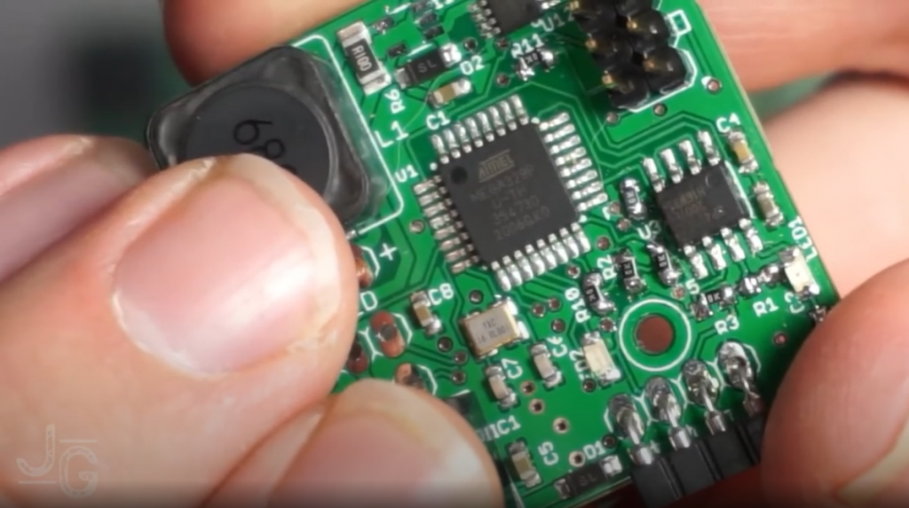
Version 0.9 and Version 0.9.1 were a first-stab at learning what it would mean to produce the PCBs (and the lights themselves) at 'scale.' The scale in this case was 10 PCBs, ordered assembled from JLCPCB like version 0.8.
Unfortunately, due to a typo in the Bill of Materials file sent to JLCPCB, all of the positions for 0603 10K resistors were instead stuffed with 0603 green LEDs, which required manually reworking ~100 components over 10 boards. This was done with a bodging tool consisting of a bit of copper wire wrapped around a soldering iron; soldering tweezers were later procured.
Additional changes to the PCB included:
- Widening the holes for the 5V buck converter so that a PCB-based converter module could be used instead of an encapsulated buck converter, to lower costs per board
- Adding a footprint for the MSOP-8 footprint of the AL8860 buck-converter LED driver, since the TSOT25 version is sometimes not stocked at JLCPCB and elsewhere
- Changing the mounting hole(s) for the PCB to a single hole immediately behind the power/DMX input connector
Change to the 3D Printed files included:
- New friction-tab mechanism for locking the two halves of the body together
- Adjustments to the case bottom to accept the new mounting hardware
- Larger clearance on the body for the tilt-servo connector to pass through
- PCBs for this version were first ordered and assembled in July, 2020.
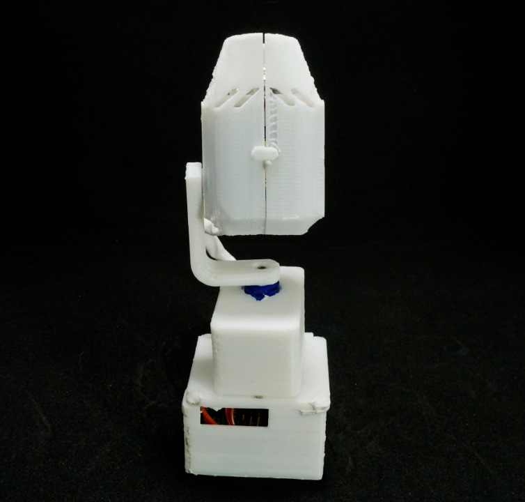
Version 0.8 was essentially a bug-fix revision to correct some of the issues stemming from being over-ambitious with version. The results, however, were were successful.
The 0.05" pogo-pin programming header was replaced with a standard 0.1" ISP programming header, doing away with the need to pre-flash the Arduino bootloader onto the ATmega before soldering. This worked well, though it does take up quite a bit more board area than the pogo-pin setup, so returning to a smaller form factor at some point will be desireable.
Additionally, some of the routing with regards to the onboard LEDs and the ceramic resonator was cleaned up.
The largest remaining error on the PCB is a mis-sized buck-converter module - as currently laid out, the spec'd module overlaps the TILT servo header connector by almost 50%. This means the buck converters have to be massaged into a workable position with their pins bent, which is obviously not idea. However, there is space on the board for the component if the pads were correctly placed, so this should be a relatively easy fix.
This revision also highlights the fact that the 3D-printed parts haven't really been updated since version 0.4, and we're tweaked to account for the new PCB, including the new placement of the 4-wire connector and the lack of a pro-mini programming header. The next version will need to incorporate those changes, as well as some tolerance adjustments.
PCBs for this version were first ordered and assembled in June, 2020.

Version 0.7 contained several new improvements, working toward automated assembly, flexibility, and smaller size.
The Arduino Pro Mini that had been socketted onto the board as a controller was replaced with a TQFP ATmega328 on board, with a 16 MHz ceramic resonator and a few other passives. This reduced the total weight to under 80 grams, reduced the through-hole component count, and massively increased the amount of free space inside the light body, leaving more room to coil the pan-servo cable.
To program the ATmega, a 6-position pogo-pin programmer was developed that would interact with the mega's 5v, ground, RST, TX, and RX pins. The thinking at the time was to allow for programming via the Arduino bootloader, and allow for serial debugging. However, this interface (made with .05" pitch pogo pins) proved unreliable, and was not successfully used to program the chip on-board. What's more, programming via the bootloader meant that the chips had to have their bootloaders burned in an external TQFP socket before soldering, a fiddly and tedious step. And since the DMX code the light runs on re-purposes the Serial hardware onboard, serial debugging is unlikely to ever be useful.
The 4-wire connection port was rearranged to have data+ and data- on the inner two conductors, and Vcc and Ground on the outer two. Along with a reverse-voltage protection diode, this prevents the RS485 from becoming damaged by high incoming voltage as was possible in version 0.5. This means that light of version 0.7 and later are not compatible with verison 0.5 and earlier.
The 5V linear regulator on the board was swapped for a 3-pin 5V buck converter to improve efficiency and alleviate excessive heat buildup.
PCBs for this version were first ordered and assembled in May, 2020.
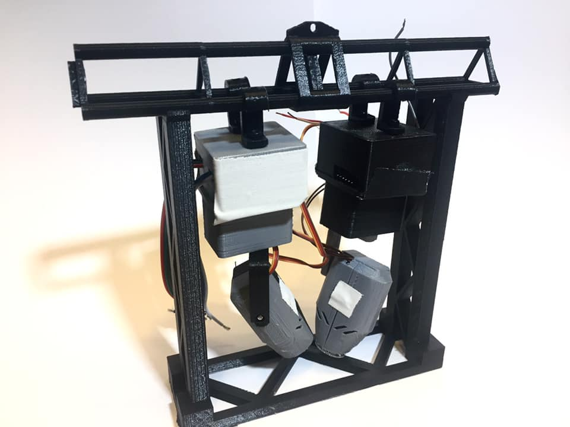
Version 0.5 is the first version to embrace a 4-wire, 0.1" connector for both power and data, as well as severing the Arduino and Servo power supply rails and allowing for either a 500mA SMD inductor or a 1A through-hole inductor. One issue is that the 4-Wire interface can, if plugged in backwards, expose the MAX485 chip to more than its rated 12.5V tolerance on its inputs.
During version 0.5, the triangle-truss connector, the 6" truss cart, and the first pieces of curved truss were developed.
PCBs for this version were first ordered August 10, 2019. They were fully assembled in September 2019.
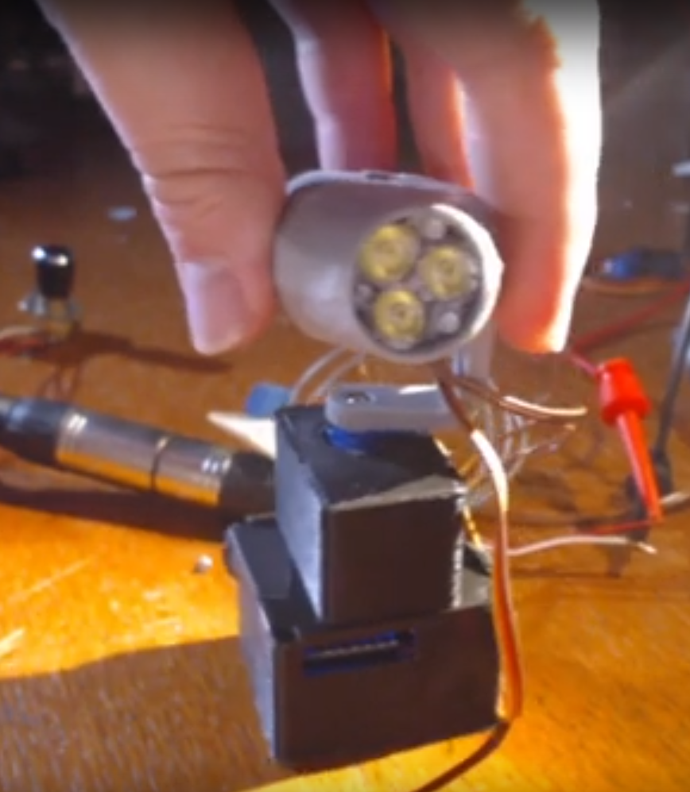
Version 0.4 of the PCB replaced the 500mA SMD inductor with a 1A through-hole inductor. It also rectified some issues present in the version 0.3, most notably that the Pan and Tilt servo pads were touching and required manual separation with a knife or drill before individual control was possible. PCB's for this version are also labelled V0.3, but can be distinguished by the through-hole inductor.
During this version, the J-Hook hanging hardware and first segment of 1/12 scale triangle-truss were developed.
PCBs for this version were first ordered June 14, 2019. First assembly of this version was in late June 2019.
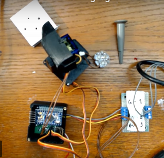
Version 0.3 was the first version of the PCB was the first to incorporate a built-in LED driver circuit based around the AL8860 IC. It also added pads for Pan and Tilt servos, and a position for a a 7805 5V regulator for Servo power.
PCBs for this version were first ordered May 14, 2019. First assembly of this version was on May 28, 2019.
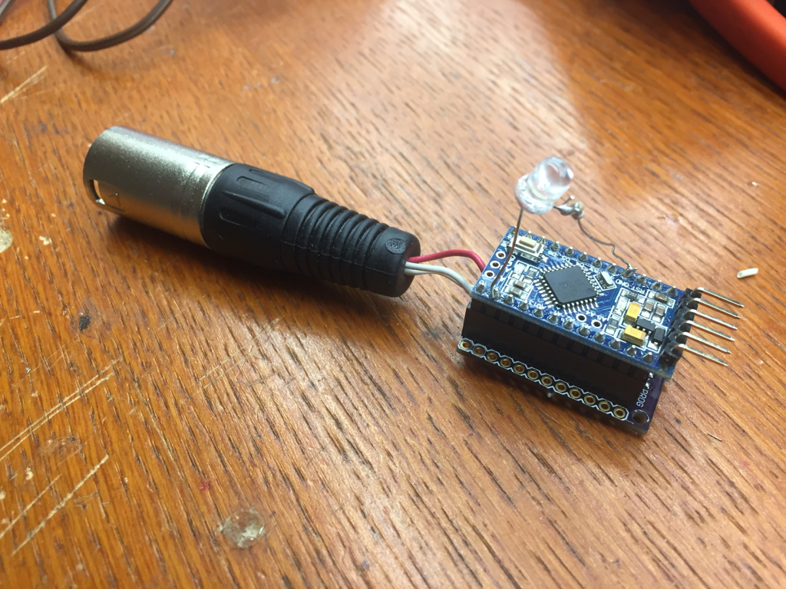
Version 0.2 added key usability features to Version 0.1, including mounting holes and a second set of headers alongside those that attached to the Arduino Pro Mini to allow connections to things other than just the Arduino. This version officially kicked off theDemlight project.
PCBs for this version were first ordered April 8, 2019. First assembly of this version was in Early May 2019.
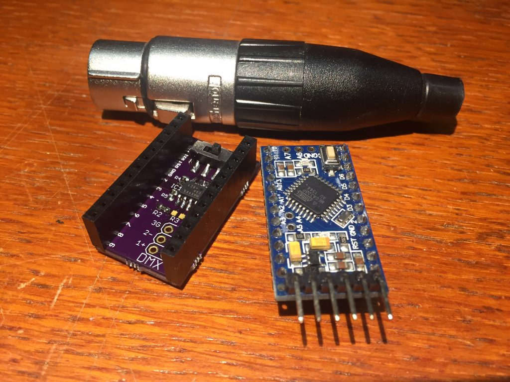
Version 0.1 was the first version of the project to receive DMX, and the first to incorporate a the PCB. The goal of V0.1 was to test the correctness of the DMX receive and transmit circuitry. It attached to an Arduino Pro Mini with a pair of 12-position headers, and used a Max485 chip to receive/transmit DMX. While this was successful, the lack of any additional connection points limited the usefulness of this iteration.
PCBs for this version were first ordered March 9, 2019. First assembly of this version was in early April 2019.
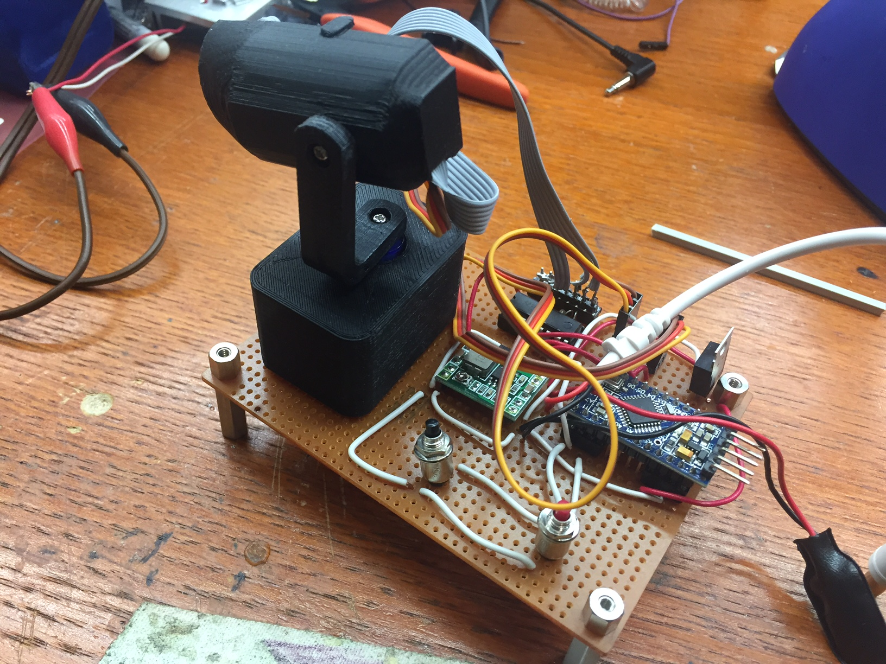
Version 0.03 was a demo-able version of version 0.02 of the 3D Printed body and servos, built for a Hardware Happy Hour in Chicago in October 2018. It used a ULN2003 IC to drive the RGBW channels of a star-PCB mounted LED at around 20mA each. This version had a demo mode which ran various servo and lighting effects, selectable by pushing a number of buttons mounted on the display unit.
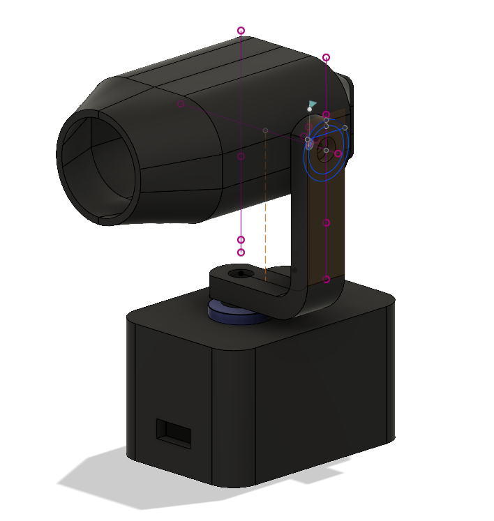
Version 0.02 was the first version with a purpose-designed 3D Printed body. It was controlled directly from an Arduino Uno driving the pair of Servo Motors for Pan and Tilt. It didn't incorporate anything that emitted light.
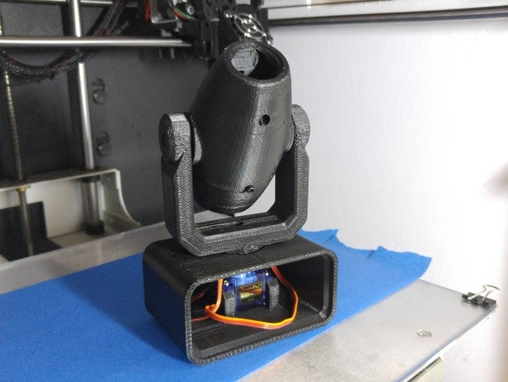
Version 0.01 was the inspiration for this whole endeavor, and was simply a print of a design from Thingiverse by user Joel Brisson (Kojoe). It's controlled by two hobby servos for Pan and Tilt, and mounted the Tilt servo inside the body of the light.